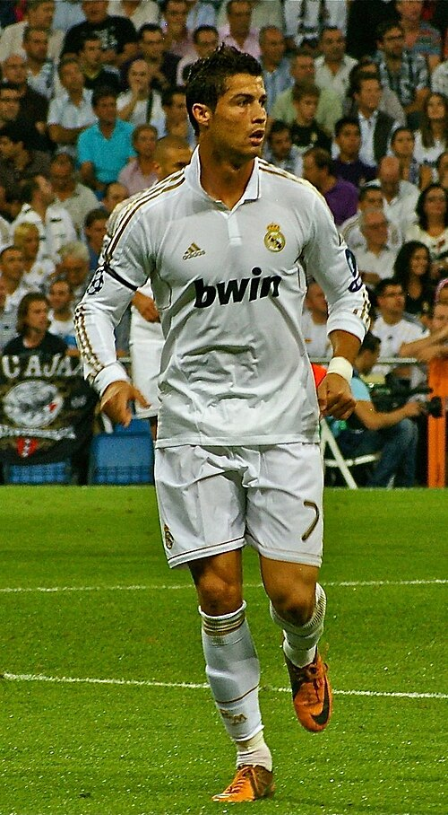

About
Cristiano Ronaldo was born in 1985 on the island of Madeira, Portugal. He joined Manchester United in 2003 and later played for Real Madrid, Juventus and Al Nassr. He is known for his speed, his heading ability and his work ethic in training. Ronaldo is the all-time top scorer in the Champions League and in international football.
The 2008 season
The 2007–08 season was his breakthrough year at Manchester United. He scored 42 goals in all competitions, won the Premier League and the Champions League, and finished the year with the Ballon d'Or. It was the season that turned a fast winger into a complete goalscorer.
Career milestones
- 2003 — signs for Manchester United at the age of 18
- 2008 — wins the Champions League and his first Ballon d'Or
- 2009 — moves to Real Madrid for a world record fee
- 2016 — captains Portugal to the European Championship title
- 2018 — joins Juventus after nine seasons in Madrid
What he is known for
- Five Ballon d'Or awards
- Five Champions League titles
- All-time top scorer in international football
- League titles in England, Spain and Italy